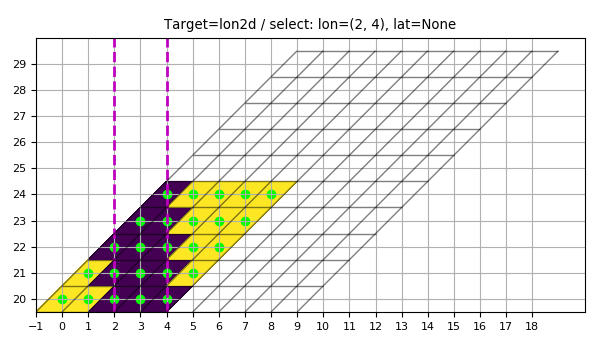
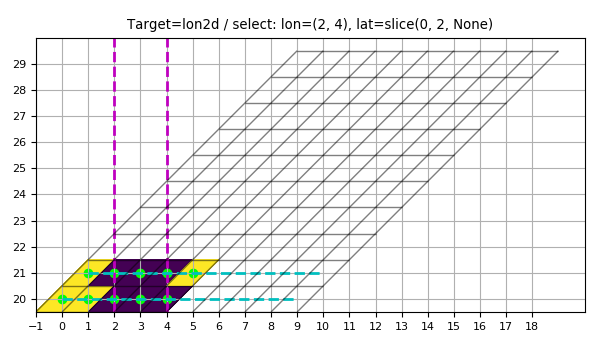
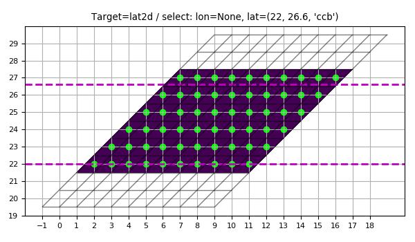
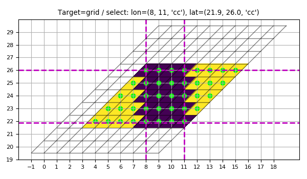
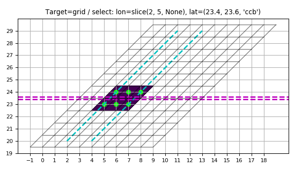

3.5.2.1. test_grid_coord2slice_acad.py – Test coord2slice()¶





"""Test :func:`~vacumm.misc.grid.misc.coord2slice`"""
from vcmq import (coord2slice, create_grid, create_axes2d, meshbounds,
add_grid, code_file_name, P, os, N, create_lon )
figfiles = []
figfile = code_file_name(ext=False)+'_%i.png'
def plot(xx, yy, target, label, figfiles, figfile, lon=None, lat=None, show=False):
xs, ys, mask = coord2slice(target, lon=lon, lat=lat)
P.figure(figsize=(6, 3.5))
P.title('Target=%(label)s / select: lon=%(lon)s, lat=%(lat)s'%locals())
add_grid((xx, yy))
xx = xx.asma()
yy = yy.asma()
if isinstance(lon, tuple):
P.axvline(lon[0], color='m', ls='--', lw=2)
P.axvline(lon[1], color='m', ls='--', lw=2)
elif isinstance(lon, slice):
i, j, k = lon.indices(xx.shape[1])
P.plot(xx[:, i], yy[:, i], 'c--', lw=2)
P.plot(xx[:, j-1], yy[:, j-1], 'c--', lw=2)
if isinstance(lat, tuple):
P.axhline(lat[0], color='m', ls='--', lw=2)
P.axhline(lat[1], color='m', ls='--', lw=2)
elif isinstance(lat, slice):
i, j, k = lat.indices(yy.shape[0])
P.plot(xx[i], yy[i], 'c--', lw=2)
P.plot(xx[j-1], yy[j-1], 'c--', lw=2)
P.xticks(N.arange(xx.min()-1, xx.max()+1))
P.yticks(N.arange(yy.min()-1, yy.max()+1))
xxi, yyi = xx, yy
xx = xx[ys, xs]
yy = yy[ys, xs]
# mask = mask[ys, xs]
xxb, yyb = meshbounds(xx, yy)
P.pcolormesh(xxb, yyb, mask, shading='faceted')
P.scatter(xx.ravel(), yy.ravel(), c=(0, 1, 0))
P.grid(True)
P.axis('image')
P.tight_layout()
i = len(figfiles)
savefig = figfile%i
if os.path.exists(savefig): os.remove(savefig)
P.savefig(savefig)
figfiles.append(savefig)
if show: P.show()
else: P.close()
# %% 1D axis
lon1d = create_lon((0, 10))
assert coord2slice(lon1d, lon=(2.5, 4., 'cc')) == slice(3, 5, 1)
assert coord2slice(lon1d, lon=(2.5, 4., 'cc')) == slice(3, 5, 1)
assert coord2slice(lon1d, lon=(2.5, 4., 'ccb')) == slice(2, 5, 1)
assert coord2slice(lon1d, lon=slice(3, 6)) == slice(3, 6, None)
assert coord2slice(lon1d, lat=(6, 8)) == slice(0, 10, 1)
assert coord2slice(lon1d, lon=(60, 70)) == None
# %% Rect grid
grid = create_grid((0, 10.), (20, 30.))
assert (coord2slice(grid, lon=(0., 3.5), lat=slice(3, 5)) ==
(slice(0, 4, 1), slice(3, 5, None), None))
assert (coord2slice(grid, lat=(21,21, 'ccb')) ==
(slice(0, 10, 1), slice(1, 2, 1), None))
# %% 2D axis
lon2d = N.empty((10, 10))
for i in xrange(10):
lon2d[i] = lon1d[:]+i
lat2d = N.resize((N.arange(10)+20), (10, 10)).T
lon2d, lat2d = create_axes2d(lon2d, lat2d)
kw = dict(show=False)
plot(lon2d, lat2d, lon2d, 'lon2d', figfiles, figfile, lon=(2, 4), **kw)
plot(lon2d, lat2d, lon2d, 'lon2d', figfiles, figfile, lon=(2, 4), lat=slice(0, 2), **kw)
plot(lon2d, lat2d, lat2d, 'lat2d', figfiles, figfile, lat=(22, 26.6,'ccb'), **kw)
# %% Curv grid
grid = create_grid(lon2d, lat2d)
plot(lon2d, lat2d, grid, 'grid', figfiles, figfile, lon=(8, 11, 'cc'), lat=(21.9, 26., 'cc'), **kw)
plot(lon2d, lat2d, grid, 'grid', figfiles, figfile, lon=slice(2, 5), lat=(23.4, 23.6, 'ccb'), **kw)
res = coord2slice(grid,lon=(8,8,'ccb'),lat=(24,24,'ccb'))
assert res[:2] == (slice(3, 6, 1), slice(4, 5, 1))
assert (coord2slice(grid, lon=(8,8,'ccb'),
lat=(24,24,'ccb'), mode='a').tolist() ==
[[4, 4, 4], [3, 4, 5]])